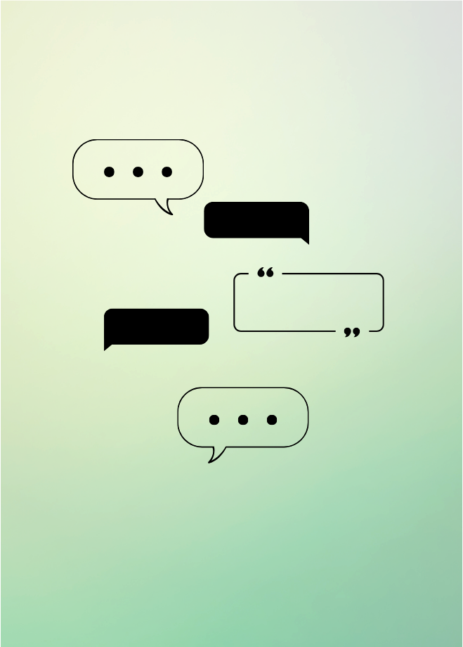
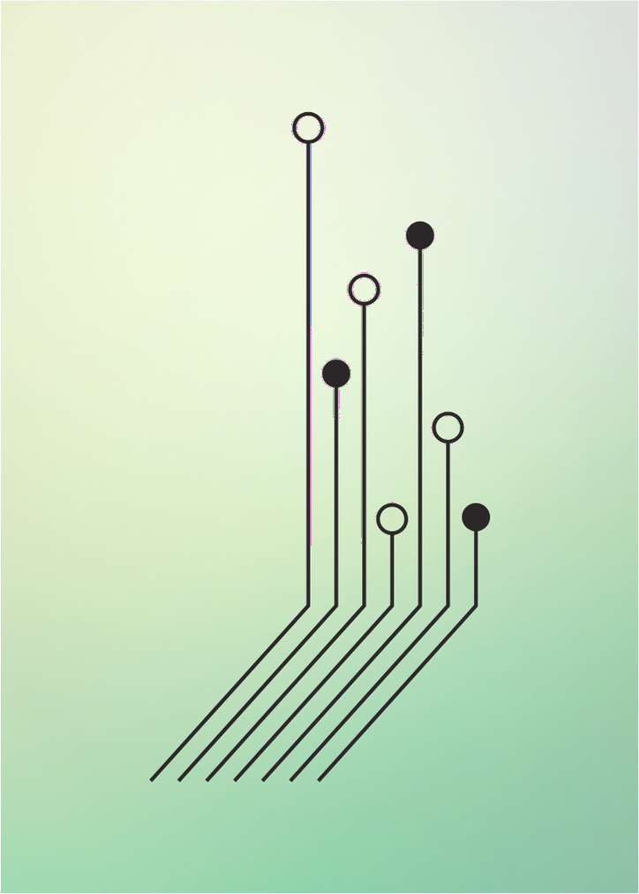

NLU-based Textual Analysis & Summarization Platform
Stride.io's IPA platform uses NLP to automate text-heavy business workflows — extracting entities, summarising documents, flagging sentiment. The technology was ready. What it needed was an interface that made machine-generated analysis feel legible to people who had never worked with NLP before.
The Problem
Business analysts — the platform's primary users — were the wrong audience for raw NLP output. Confidence scores, entity tags, and sentiment vectors are meaningful to an ML engineer. To someone working inside enterprise tools all day, they read as noise, or worse, as errors.
The brief was to design interactive demos that would let Stride.io validate the platform with early customers. But the underlying design challenge was harder than that: how do you make a system that explains what it's doing without explaining how? And how do you build trust with users who don't yet have a mental model for what the product is?
What Research Surfaced
Stakeholder interviews with the Stride.io team and conversations with prospective users established three consistent tensions that shaped the design:
Trust before use
Users needed to verify the platform against documents they already knew before they would trust it on new ones. The product had to earn confidence before delivering value.
Explanation without jargon
Users wanted to understand what the platform was telling them — not how the model worked. Every piece of ML vocabulary in the interface was a potential exit point.
Variable input quality
Documents arriving into the platform were not clean. Some were partial, some poorly formatted, some domain-specific. The interface had to handle imperfect input gracefully rather than reject it.
Three Decisions That Shaped the Design
-
01
Module-first architecture
Rather than a single unified interface, the platform was built around discrete capabilities — Text Summarisation, Entity Extraction, Sentiment Analysis — each accessible independently. This addressed the trust problem directly: users could test one module against familiar documents before committing to a broader workflow. It also gave Stride.io flexibility in how they demoed the product to different buyer types.
-
02
Progressive disclosure of confidence
NLP outputs carry confidence scores. Showing them by default was a mistake we caught early — mid-fi testing participants read low-confidence flags as platform errors rather than model uncertainty. The redesign buried precision scores inside expandable detail panels, surfacing only high-confidence outputs in the primary view. Users who wanted the detail could find it; users who didn't were never confused by it.
-
03
Input that sets expectations before processing
Testing also revealed that users formed their judgement of the platform during input, not output. When they uploaded a messy document and got a clean summary, the gap felt like magic — and that created distrust, not delight. Adding inline feedback at the input stage (flagging incomplete fields, noting document quality) made the processing feel earned, not mysterious.
What Changed Through Testing
The first round of mid-fi testing surfaced a navigation problem that wasn't in the original information architecture. Users working across multiple modules lost track of which document they were analysing — switching between Summarisation and Entity Extraction felt like starting over. A persistent document context panel, pinned to the left of the interface, was added after this round. It wasn't in the sitemap. It ended up being one of the most commented-on features in subsequent testing.


Platform Modules
Text Summarisation
Compresses long-form documents into structured bullet-point summaries, prioritising key claims over detail.
Entity Extraction
Identifies and classifies named entities — people, organisations, locations, dates — across unstructured text.
Sentiment Analysis
Scores text across a five-point scale from Very Negative to Very Positive, with entity-level breakdown.
Outcome
The demos were used by Stride.io to onboard early enterprise customers and support the sales process. The UI kit and developer handoff documentation became the foundation for the production build.
01
Sitemap & IA
02
Task Flow & User Flow
03
UI Requirement Document
04
Mid-Fidelity Prototype & Testing
05
Hi-Fidelity Prototype
06
UI Kit & Dev Handoff